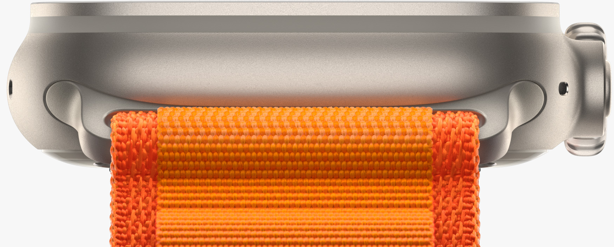

Nasce un orologio che va oltre l'immaginazione
Per atleti e atlete che vogliono superare i loro limiti.
Il richiamo dell’avventura.
Scopri l’Apple Watch più capace e robusto di sempre. Una solidissima cassa in titanio, GPS di precisione a doppia frequenza, fino a 36 ore di batteria,1 la libertà del cellulare2 e tre cinturini speciali. Per tutti i tipi di atleta, e per ogni genere di avventura.
Ingegneria
estrema.

Sembra un duro.
Perché lo è.
Volevamo creare lo sportwatch assoluto, perciò abbiamo progettato ogni dettaglio con cura maniacale puntando a prestazioni ineguagliabili. Il titanio bilancia perfettamente peso, robustezza e resistenza alla corrosione. I bordi rialzati della cassa proteggono dagli impatti laterali il vetro anteriore piatto, in cristallo di zaffiro. E la Digital Crown e il tasto laterale ora sono più grandi, comodi da usare anche con i guanti.
Resistenza all’acqua fino a 100 m*